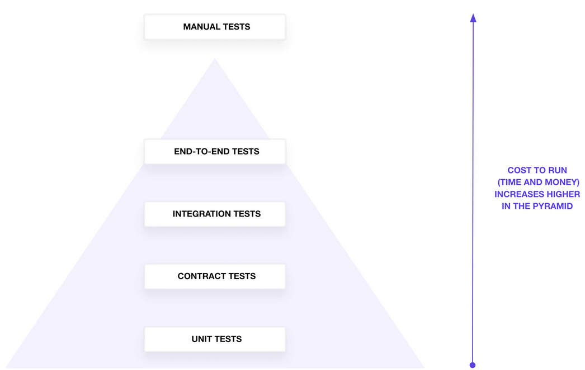

Unit testing our terraform modules
made with ♥ by xaf
A procedure intended to establish the quality, performance, or reliability of something, especially
before it is taken into widespread use.
Pyramid test

How we could test a terraform module?
Now
Considerations
- Test needs to be inside test folder (you can change it)
- Tests have the *.tftest.hcl extension
- Run new block syntax
Example
$ tree kraken/s3
.
├── README.md
├── main.tf
├── terraform.tf
├── tests
│ └── bucket_versioning.tftest.hcl
└── variables.tf
Run
- command
- assert
- expect_failures
- variables, module, providers
Example
run "create_s3_versioning_bucket" {
variables {
versioning = "Disabled"
}
assert {
condition = local.versioning_status == var.versioning
error_message = "Invalid versioning status."
}
}
Live example
How we're doing it?
- Kraken, our terraform modules repository